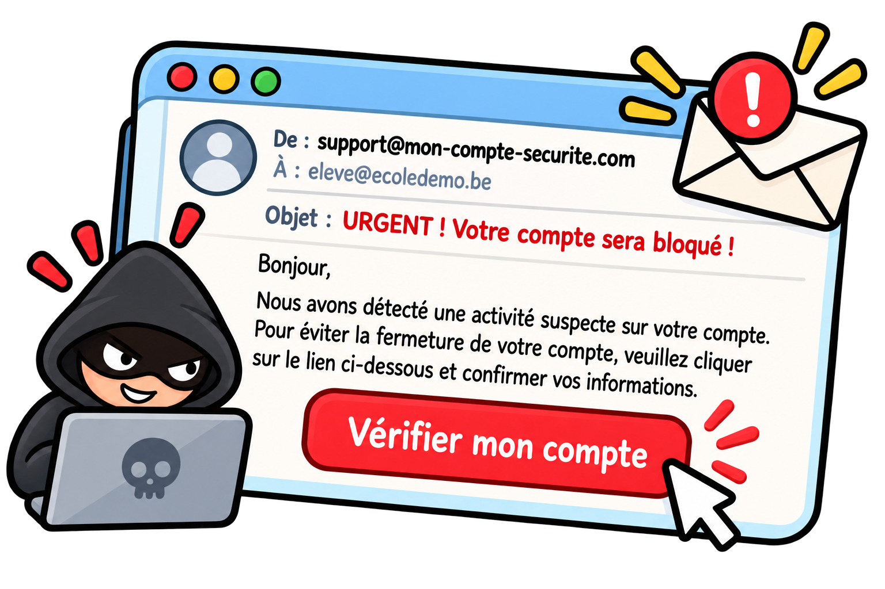

La sécurité sur le Web
Quelques réflexes simples suffisent pour éviter les pièges les plus courants.
Pourquoi ça nous concerne ?
Sur le Web, on partage des informations personnelles sans toujours s'en rendre compte : adresses, mots de passe, données de paiement. Savoir se protéger n'est pas réservé aux experts.
Quatre points à connaître
-
HTTP et HTTPS
Avec HTTPS, ce qui circule entre toi et le site est chiffré. Attention : cela protège l'échange, mais ne prouve pas que le site est honnête.
-
Les mots de passe
Un mot de passe long et différent pour chaque site limite les dégâts si l'un d'eux est volé.
-
L'hameçonnage
Des messages imitent un organisme connu pour te pousser à donner des informations. Vérifie l'expéditeur et le lien avant de cliquer.
-
Les mises à jour
Elles corrigent des défauts de sécurité découverts après la sortie d'un logiciel ou d'un navigateur.
Les bons réflexes
- Vérifier que l'adresse commence par https avant de saisir des informations.
- Utiliser un mot de passe différent pour chaque site.
- Activer la double authentification quand elle est proposée.
- Ne pas cliquer sur un lien suspect reçu par message.
- Installer les mises à jour de ses appareils et de son navigateur.

Jeu : prudent ou suspect ?
Ce jeu a besoin de JavaScript pour fonctionner.